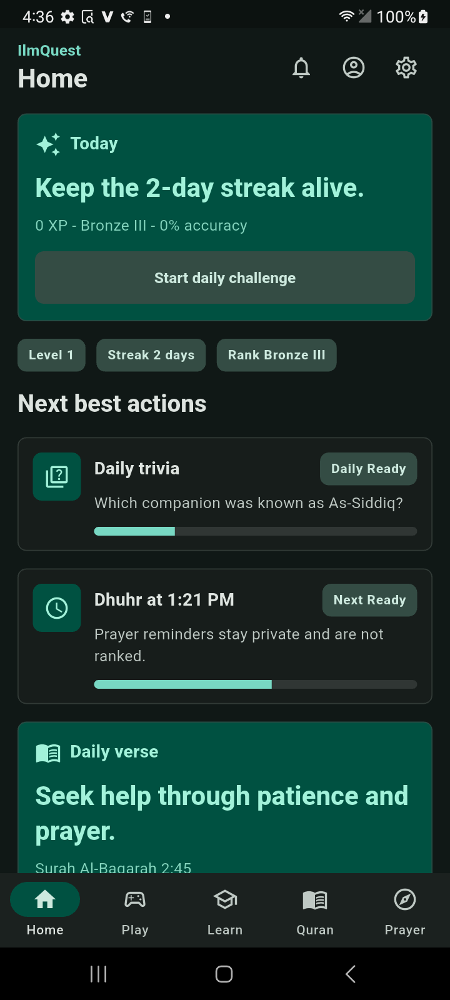
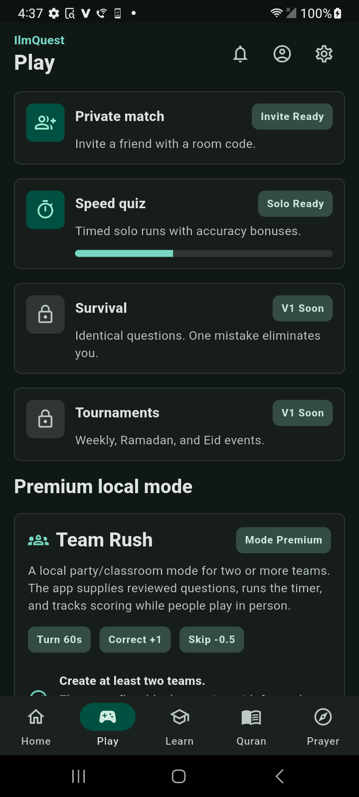
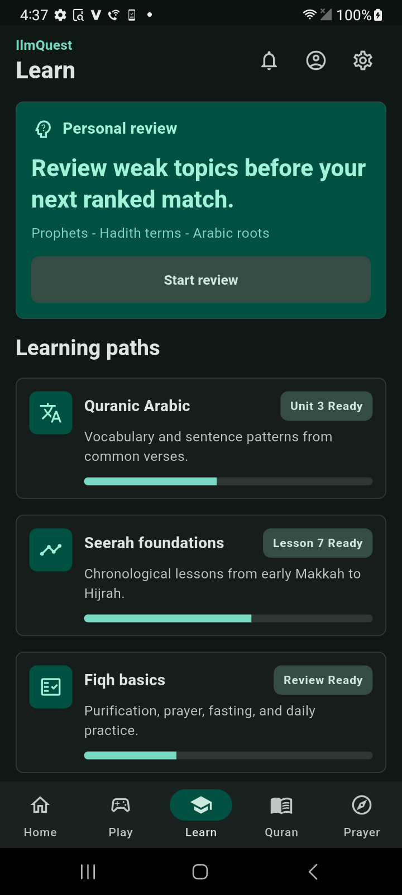
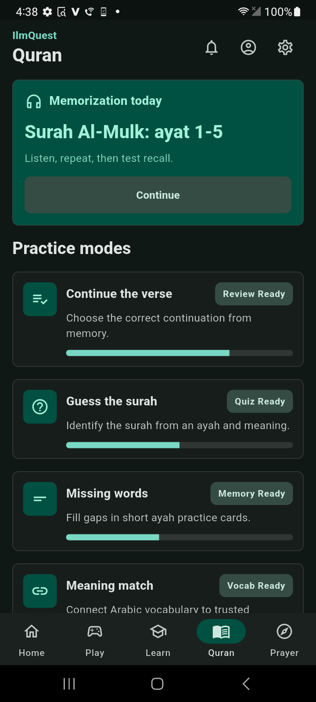
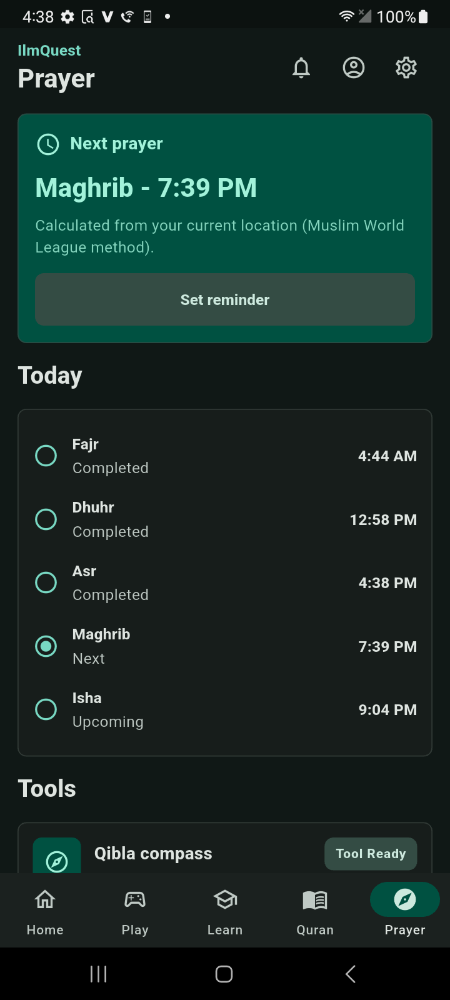
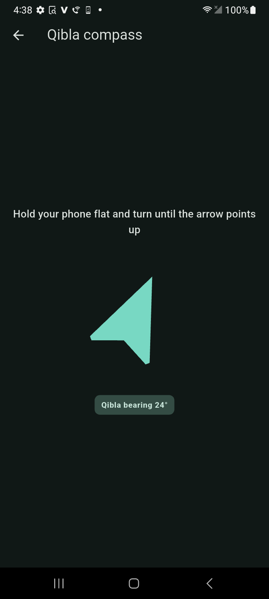

A Flutter mobile app for Islamic learning — real accounts, 2FA, live multiplayer game modes, and a Firestore-backed, scholar-reviewed content pipeline. In active development, targeting iOS/Android; not yet publicly released.
State/navigation are handled with Riverpod + go_router; every screen reads live Firestore data through typed providers rather than local mock state.
Anonymous-first authentication with guest→account link-upgrade, so nothing blocks a first-time user from playing immediately. Two-factor authentication is real, not cosmetic — enable/disable and verification run through dedicated Cloud Functions callables using the Admin SDK, deliberately outside client-writable Firestore rules so a stolen session token can't silently disable it.
A Family Team Game Mode supports both same-room, single-device play and a fully remote mode with Cloud-Functions-arbitrated turn resolution once a match leaves the lobby. A shared, reviewed trivia question bank (1,000+ questions across Quran, Seerah, Fiqh, Arabic vocabulary, and more categories) backs both the solo quiz modes and a Survival mode that ends on the first missed question. A live device-compass Qibla finder corrects for magnetic declination using the device's GPS position, rather than assuming magnetic north lines up with true north.
Trivia content moves through a reviewed pipeline: draft CSVs → a deterministic build script → a versioned question_bank_data.json → seeded into Firestore via an Admin-SDK-only script. Every question carries a verified flag, and the UI visibly marks content pending scholarly review rather than presenting it as equivalent to reviewed material.
Captured directly off a physical test device against the live Firebase backend — not a mockup.





